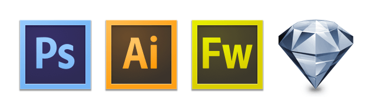

このイベントは終了しました。
Sketchフィーバーからずいぶん時間が経ってしまいましたが、大都会岡山で、「Ps / Ai / Fw / Sketch ガチンコバトル勉強会」を開催することになりました。基本的にはウェブサイトやアプリのユーザーインターフェイス などをつくる、いわゆる「デザイン」ツールの勉強会です。- 場所や参加表明などについてはこちらから
- Ps / Ai / Fw / Sketch ガチンコバトル勉強会 in 岡山 : ATND
勉強会の概要
自らも「ずいぶんと大きい釣り針のタイトル付けたな」と思いながら反応にガクブルしているんですが、そもそも「宗教戦争」をしようというものじゃございません。
制作現場においては、ワークフローの大変革の時期に差し掛かっていると思いますが、それに対応するために個々のアプリの長所にフォーカスし、ケースバイケースで使い分けられるようにしようぜ！というのがこの勉強会のコンセプトです。
タイトルにあるアプリはもちろんですが、その周辺にあるサポートアプリにも話を広げられたらと思ってます。他のアプリをdisってヒャッハーする勉強会だと思ってた方、ごめんなさい（いらっしゃらないと思いますが）。
ガチンコバトルといいながら、今のところSketchとFireworksがメインになってまして、PhotoshopやIllustratorをメインで使ってる方を絶賛募集中です。その他のアプリの殴り込みも大歓迎！（遠方の方はハングアウトで参加という手があります…！）
内容
内容ですが、私がSketchの概要とこんな感じのアプリですよというをお伝えしようかと思ってます。（世に出てる紹介記事の域を出ないかもしれませんが…）また、Fireworksでお馴染みの丸山 章さんにもお越しいただいて、Fireworksについてお話しいただく予定です。
参加者同士で、「こういう機能はないの？」「こういう時どうしてる？」といった情報の交換も予定しています。
まだまだ内容は固まってませんので、リクエストがあればそれに応じた話はできるんじゃないかと思います。ATNDは随時更新していきますので、気になる方は定期的にチェックしてください。正直なところ、どういう風に転がるか、本人にも不明ですｗ
その他
あとUSTも予定していますので、当日会場に来られないという方や「我、Photoshop / Illustrator の猛者ぞ？」という方のご参加もお待ちしております。（USTをやることに反応があれば、本人のUSTへのやる気が倍増します。ツイートにUSTという文字があればOKで、ATNDへの参加表明は不要です。）
ということで、デザイナーの方はもちろん、デザイナーじゃないよという方、アプリを使ったことがある程度の方でもお気軽にどうぞ！
- 場所や参加表明などについてはこちらから
- Ps / Ai / Fw / Sketch ガチンコバトル勉強会 in 岡山 : ATND